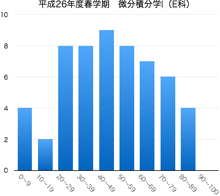

2014年度春学期 微分積分学 I Differential and Integral Calculus I
水3限 13:20-15:00 | 2-275教室 | 対象：電気電子工学科1年生
担当：佐藤 弘康（hiroyasu [at] nit.ac.jp | W1棟204 | 0480-33-7972）
自然科学のみならず工学のさまざまな分野で、現象を表現・解析する手段として微分積分学の知識は欠かせない。 微分積分学の概念・計算技法を身につけるために、1変数関数を対象とした微分法について学習する。基礎的な計算技法に習熟するとともに、極限や極値に関する理論も習得する。
| 第1回 | 4月 | 9日（水） | ガイダンス，ミニクイズ（関数の概念について） |
| 第2回 | 16日（水） | 関数の極限 第1章 §1.1 ，微分係数 第1章 §1.2 | |
| 第3回 | 23日（水） | 導関数 第1章 §1.3 ，関数の極限（再考） (1) 第2章 §1.1 | |
| 30日（水） | 火曜日の授業日 | ||
| 第4回 | 5月 | 7日（水） | 関数の極限（再考） (2) 第2章 §1.1 |
| 第5回 | 14日（水） | 関数の連続性 第2章 §1.2 ，べきの微分法 第2章 §2.1 | |
| 第6回 | 21日（水） | 積の微分法，商の微分法 第2章 §2.1 | |
| 第7回 | 28日（水） | 合成関数の微分法 第2章 §2.2 | |
| 第8回 | 6月 | 4日（水） | 三角関数の導関数 第2章 §3.1, 3.2, 3.3 |
| 第9回 | 11日（水） | 小テスト（中間試験） 問題 解答 | |
| 第10回 | 18日（水） | 逆関数の微分法 第2章 §4.1 | |
| 第11回 | 25日（水） | 逆三角関数 第2章 §4.2 | |
| 第12回 | 7月 | 2日（水） | 逆三角関数の導関数 第2章 §4.3 対数関数の導関数 第2章 §5.1, 5.2 |
| 第13回 | 9日（水） | 指数関数の導関数 第2章 §5.3 | |
| 第14回 | 16日（水） | 対数微分法 第2章 §5.4 関数の増減 第3章 §3.1, 3.2, 3.3, 3.4, 3.5 |
(補講) | web 補講「テイラー展開」 第6章 §3.1, 3.2 YouTube スライド |
| 30日（水） | 期末試験 (12:40 -- 13:40, 1-204教室) |
|  |
|